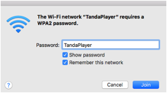
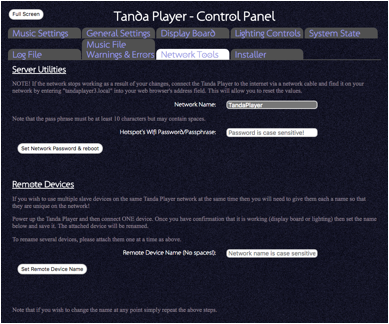

One of the first things that the Tanda Player does when it starts up is create a Wi-Fi hotspot which is called “TandaPlayer” by default. The password for this network is also “TandaPlayer” by default but this can be changed using the setup page.

The Setup page or Control panel is a multi-tab page where you can set some of the properties that do not change all that often.
Some properties need the system to be re-started before they take effect.
Please note that changing the WiFi hotspot Passwords and/or the network names may result in errors which in turn may prevent you from being able to reconnect to the Tanda Player until you plug it back into a wired network.

Under the Network Tools tab are the controls you can use to set the password (or pass phrase) for the network. This can contain spaces. Once changed, you will need to re-start the system which the button “Set Network Password & reboot” will do all in one go.
Note that the Tanda Player’s network is automatically connected to by any slave devices. If you change the network password these will cease to work. To get around this, make sure you have all your slave devices connected and working when you go to change the password. The password will then be sent to each slave device and each slave device will also then re-boot. In this way all devices should then be re-started and will connect to the network using the new password.
Also note that if you have multiple slave devices their own default names will cause a network clash because they will all be the same! Therefore, power up each slave device one at a time and then enter a new name for it into the “Remote Device Name” field but note this time that spaces are not allowed.
Once the “Set Remove Device Name” button is pressed the slave device will be renamed and it will re-start. Once you have confirmed that this is working, you can then disconnect it and startup another one and repeat the process and so name each of them to a new and unique name on your Tanda Player network.
Once they have all got a different name you can then power them all up at the same time and there should not be any network conflicts.
Note - It is recommended to not change the network name from TandaPlayer as it helps identify the right network easily and may cause slave devices to fail to connect.
The system will read a small plain text file that you place on your USB along with your music files if you call the file
“network.txt”
This must contain two lines:
name:Your Network Name
passphrase:Your pass phrase
There must be no spaces around the colons (“:”) and the special words “name” and “passphrase” must be lower case.
Your own network name and pass phrase may contain spaces and only alpha numeric characters and the password must be at least 8 characters long.
Once you have created this file on the USB device, re-start the Tanda Player and it will change the network details and then re-start. You should see your new network name within a few seconds.
Once the file has been used to set the network name it will be renamed to have “used” appended to it.
Remember you will now need to change the details on all your laptops and phones etc. before you can re-use the Tanda Player properly.
Make sure you are not playing any songs on the Tanda Player whilst you change network details as this may cause the system to reboot unexpectedly and may cause data file corruptions.
Only use this approach if you know what you are doing! Please Google for possible values for each parameter of “hostapd.conf”before changing as this could render your network unusable until a valid file is used.
The system will read a file called “network.config”.
The contents must be the full “hostapd.conf” file. An example file is added to an empty USB when initialising and looks something like the following:
interface=wlan0
#driver=rtl871xdrv
country_code=US
hw_mode=g
channel=6
macaddr_acl=0
auth_algs=1
wpa=2
wpa_key_mgmt=WPA-PSK
wpa_pairwise=CCMP
wpa_group_rekey=86400
ieee80211n=1
wme_enabled=1
ssid=TandaPlayer
wpa_passphrase=TandaPlayer
If you end up with a system that will no longer produce a network, simply put a working “network.config” file at the top level of the USB and re-start.
Once the file has been used to setup the system, it will rename it to “network.config.used” to prevent it setting this up every time.
Once the network has been configured you no longer need these files on the system and they can be removed.